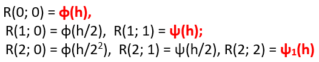
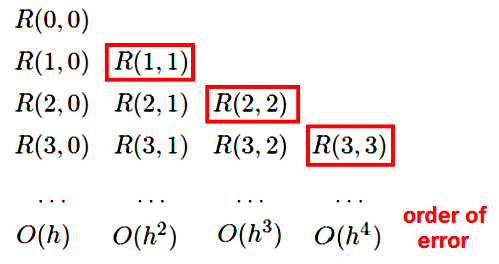
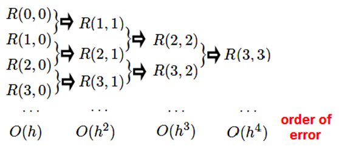
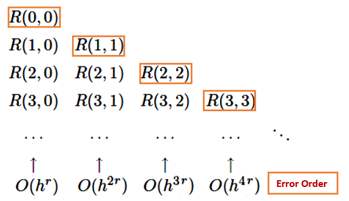
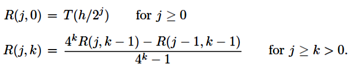
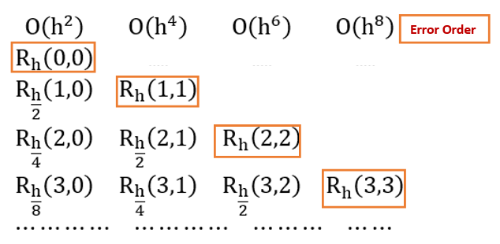
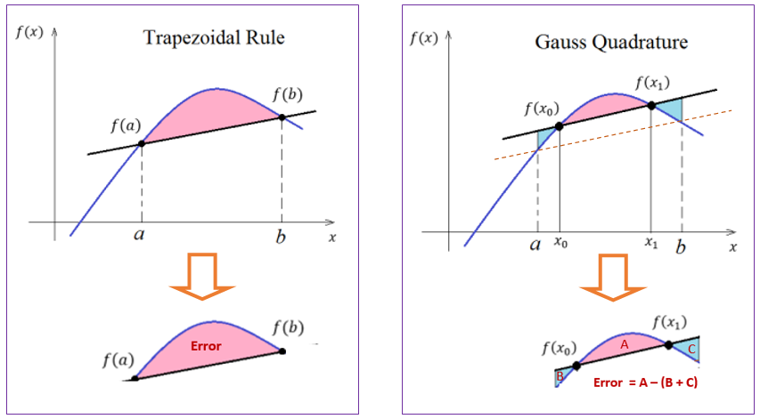

Topic 20 Romberg Integration and Gaussian Quadratures
Interpolation is to estimate a value between a given set of known values. Extrapolation is to use of known values to project a value outside of the intended range of the previous values.
In trapezoid and Simpson’s methods, the accuracy of the approximation increases as the step size \(h = (b-a)/n\) decreases (i.e., n gets bigger). From the computational perspective, reducing \(h\) requires increasing the number of points \(n\), and so increases the “cost” (time and other resources needed) of the calculation.

In this note, we will introduce methods that use the same step size \(h\) but archives a more accurate approximation.
20.1 Richardson Extrapolation
Richardson’s extrapolation process is a well known method to improve the order of several approximation processes. It can be applied not only to improve the order of a numerical differentiation formula but also to find in fact the original formula.
In this section, we use the concept of Richardson Extrapolation to demonstrate how a higher-order integration can be achieved using only a series of values from the Trapezoidal Rule. Similarly, accurate values of derivatives could be obtained using low-order central difference derivatives.
20.1.1 The Logic of the Richardson Method
Assume that \(\phi(h)\) is infinitely continuously differentiable as a function of \(h\), thus allowing us to expand \(\phi(h)\) in the Taylor series
\[ \phi(h) = \phi(0) + h\phi^\prime(0) + \frac{\phi^{\prime\prime}(0)}{2!}h^2 + \frac{\phi^{\prime\prime\prime}(0)}{3!}h^3 + \frac{\phi^{(4)}(0)}{4!}h^4 + O(h^5) \]
Let \(c_i = \frac{\phi^{(i)}(0)}{i!}\). We rewrite the above Taylor expansion to get
\[ \phi(h) = \phi(0) + c_1h + c_2h^2 + c_3h^3 + c_4h^4 + O(h^5) \] Apparently,
\[ \phi(h/2) = \phi(0) + \frac{c_1}{2}h + \frac{c_2}{4}h^2 + \frac{c_3}{8}h^3 + \frac{c_4}{16}h^4 + O(h^5) \] Define \(\psi(h) = 2\phi(h/2) - \phi(h)\). We have
\[ \psi(h) = \phi(0) - \frac{c_2}{2}h^2 - \frac{3c_3}{4}h^3 - \frac{7c_4}{8}h^4 - O(h^5) \]
Note that \(\psi(h)\) also approximates \(\phi(0)\), but with an \(O(h^2)\) error, rather than the \(O(h)\) error. For small \(h\), this \(O(h^2\)) approximation will be considerably more accurate.
If we repeat what we did on \(\phi(x)\) to \(\psi(x)\), that is
\[ \psi(h/2) = \phi(0) -\frac{c_2}{8}h^2 - \frac{3c_3}{32}h^3 -\frac{7c_4}{128}h^4 - O(h^5) \]
To cancel the two terms that contain \(h^2\), we define \(\psi_1(h) = [4\psi(h/2) - \psi(h)]/3\) in the following
\[ \psi_1(h) = \phi(0)+\frac{4\psi(h/2) - \psi(h)}{3} = \frac{c_3}{8}h^3 + \frac{7c_4}{32}h^4 + O(h^5) \]
Similarly, \(\psi_1(0) = \psi(0) = \phi(0)\) but the approximation \(\psi_1(0)\) has an \(O(h^3)\) error. This means \(\psi_1(0)\) more accurate than \(\psi(0)\).
We can continue this procedure repeatedly, each time improving the accuracy by one order, at the cost of one additional computation with a smaller h.
20.1.2 Algorithm of Richardson Method
To facilitate generalization and to avoid a further tangle of notations for developing an algorithm, we use two indices and define
\[ \begin{array}{lclcl} R(j, 0) & := & \phi(h/2^j) & & j \ge 0; \\ R(j, k) & := & \frac{2^kR(j, k-1)-R(j-1, k-1)}{2^k-1} & & j \ge k > 0. \end{array} \]
This procedure is called Richardson extrapolation after the British applied mathematician Lewis Fry Richardson, a pioneer of the numerical solution of partial differential equations, weather modeling, and mathematical models in political science.
With the above notations, we summarize the previous derivation of various approximations of \(\phi(0)\) in the following table.

In general, the recursive algorithm can be represented in the following triangular extrapolation table.

Remarks:
We expect the bottom-right element in the table to be the most accurate approximation to \(\phi(0)\).
The recursive process is built on the approximations in the first column (see the following flow chart).

- Each of the cells in the triangular table is a valid approximation of \(\phi(0)\).
20.1.3 Higher Order Extrapolation
If the initial algorithm \(\phi(h)\) is better than \(O(h)\) accurate and in this case, the formula for \(R(j; k)\) should be adjusted to take advantage. That is, if
\[ \phi(h) = \phi(0) + c_1h^r + c_2h^{2r} + c_3h^{3r} + c_4h^{4r} + O(h^{5r}) \] for some integer \(x \ge 1\). For example,
\[ \cos(h) = 1 - \frac{1}{2!}h^2 + \frac{1}{4!}h^{2\times2} - \frac{1}{3!}h^{2\times3}h^6 + O(h^{2\times 4}) \] where \(r = 2\).
We then can define the following recursive relationship below.
\[ \begin{array}{lclcl} R(j, 0) & := & \phi(h/2^j) & & j \ge 0; \\ R(j, k) & := & \frac{2^{rk}R(j, k-1)-R(j-1, k-1)}{2^{rk}-1} & & j \ge k > 0. \end{array} \]
The corresponding extrapolation table is given by

20.1.4 Algorithm and Code
The recursive extrapolation procedure itself is simple arithmetic. It is easy to make a R/MATLAB function to implement the algorithm.
Richardson.Method = function(fn, # input function
h, # step size: h
r = 1, # input r-th order of error
digit = 7, # number of digits to keep
J # number of extrapolations
){
RR = matrix(rep(NA,J^2), ncol = J) # Output table of Richardson
for (i in 1:J) RR[i,1] = fn(h/2^(i-1)) # defining R(j,0)
for (k in 2:J){
for (j in k:J){ #
RR[j,k] = (2^(r*(k-1))*RR[j,k-1] - RR[j-1, k-1])/(2^(r*(k-1))-1)
}
}
options(digits = digit)
print(RR, na.print = "")
}Example 1: Let \(f(x) = \exp(x)\). Find \(f^\prime(1)\) with \(h =1\).
Solution Define \[ \phi(h) = \frac{f(1+h) - f(1)}{h} \] Then \(f^\prime(1) = \lim_{h \to 0} \phi(h) = f^\prime(1)\). We use Richardson extrapolation to approximate \(f^\prime(1)\).
## [,1] [,2] [,3] [,4] [,5] [,6] [,7]
## [1,] 4.6707743
## [2,] 3.5268145 2.3828547
## [3,] 3.0882445 2.6496745 2.7386145
## [4,] 2.8954802 2.7027158 2.7203962 2.7177936
## [5,] 2.8050259 2.7145715 2.7185234 2.7182559 2.7182867
## [6,] 2.7612009 2.7173759 2.7183107 2.7182803 2.7182820 2.7182818
## [7,] 2.7396294 2.7180580 2.7182854 2.7182817 2.7182818 2.7182818 2.7182818Example 2. Find the first order derivative of \(f(x) = x*\exp(x)\) at \(x =2\) with \(h = 1/2\). The true value is \(f^\prime(2) = 2+2\exp(2)\).
Solution: To use the Richardson method, we define \[ \phi(h) = \frac{f(2+h) - f(2)}{h} \]
## [,1] [,2] [,3] [,4] [,5]
## [1,] 31.356245
## [2,] 26.277174 21.198102
## [3,] 24.114360 21.951546 22.202694
## [4,] 23.115311 22.116262 22.171167 22.166664
## [5,] 22.635054 22.154798 22.167643 22.167140 22.167171
20.2 Romberg Integration
The Romberg integration uses the Richardson extrapolation on the composite trapezoidal rule.
20.2.1 Approximation formula and Error Analysis
Recall that, if \(f(x)\) is in \(C^\infty[a,b]\) (i.e., any given order of derivative of \(f(x)\) exists and is continuous), the composite trapezoid rule approximates the integral \(\int_a^bf(x)dx\) by
\[ \int_a^bf(x)dx \approx \frac{h}{2}\left[f(a) + 2\sum_{j=1}^{n-1}f(a + jh) + f(b) \right] \] where \(h=(b-a)/n\). n is the number of sub-intervals. The error term given in the previous note can be written as
\[ E = \sum_{i=1}^nE_i = \sum_{i=1}^n \int_{x_i}^{x_{i+1}}\left[ f(x)-S(x)\right]dx = \sum_{i=1}^n\frac{f^{\prime\prime}(c_i)}{2}\times\left[-\frac{(x_{i+1}-x_i )^3}{6}\right] ~~~~~~ \text{(see the last note)} \] \[ = \sum_{i=1}^n\frac{f^{\prime\prime}(c_i)}{n}\times\left[-\frac{n(x_{i+1}-x_i )^3}{12}\right] = -\frac{nh^3}{12}\sum_{i=1}^n\frac{f^{\prime\prime}(c_i)}{n}. \] where \(c_i\) is a number in subinterval \([x_i, x_{i+1}]\). Clearly for \(i = 1, …, n\),
\[ \min_{x\in[a,b]} f^{\prime\prime}(x) \le f^{\prime\prime}(c_i) \le \max_{x\in[a,b]} f^{\prime\prime}(x). \]
Therefore,
\[ \min_{x\in[a,b]} f^{\prime\prime}(x) \le \frac{\sum_{i=1}^nf^{\prime\prime}(c_i)}{n} \le \max_{x\in[a,b]} f^{\prime\prime}(x). \]
By the intermediate mean value theorem, there exists a value in \([a, b]\), say \(\xi\), such that
\[ f^{\prime\prime}(\xi) = \sum_{i=1}^n \frac{f^{\prime\prime}(c_i)}{n} \] Therefore,
\[ E = \sum_{i=1}^nE_i = -\frac{nh^3}{12}\sum_{i=1}^n\frac{f^{\prime\prime}(c_i)}{n} = - \frac{nh^3}{12}f^{\prime\prime}(\xi) = -\frac{(b-a)f^{\prime\prime}(\xi)}{12}h^2. \]
The complete expression of the numerical integration using the trapezoid rule with n-subintervals is given by
\[ T(h) = \int_a^bf(x)dx = \frac{h}{2}\left[f(a) + 2\sum_{j=1}^{n-1}f(a + jh) + f(b) \right] -\frac{(b-a)f^{\prime\prime}(\xi)}{12}h^2 \] where \(a = x_0 < x_1 < \cdots < x_n = b\). \(\{ x_1, \cdots, x_n\}\) are equal spaced and \(h = (b-a)/n\). \(c_i\) is in \([a, b]\).
20.2.2 Romberg Algorithm
From the last formula of the previous sub-section, we see that the trapezoidal rule has an order of approximation \(O(h^2)\).
The higher order Richardson’s algorithm has the following recursive relationship.
\[ \begin{array}{lclcl} R(j, 0) & := & \phi(h/2^j) & & j \ge 0; \\ R(j, k) & := & \frac{2^{rk}R(j, k-1)-R(j-1, k-1)}{2^{rk}-1} & & j \ge k > 0. \end{array} \] Therefore, following the Richardson extrapolation with \(r=2\), we have

The corresponding Richardson extrapolation table is given by

20.2.3 R Code
Since this is a direct application of the Richardson extrapolation. We will simply implement it in R.
Goal: approximate the definite integral
\[ \int_a^b f(x)dx \]
Partition: partition interval \([a,b]\) with equal width \(h\) that gives explicit partition \[ a=x_0 < x_1 < x_2 < \cdots < x_{n-1} < x_n \] where $ h = x_{i+1} - x_i$ for \(i = 0, 1, \cdots, n-1\).
Approximated area formula based on composite trapzoid rule
\[ T(h) = \int_a^bf(x)dx = \frac{h}{2}\left[f(a) + 2\sum_{j=1}^{n-1}f(x_i) + f(b) \right] +O(h^2) \] \[ = \sum_{j=1}^{n-1}f(x_i) + \frac{h[f(a) + f(b)]}{2} + O(h^2). \] The approximated area is a function of \(h\) \[ \phi(h) = \sum_{j=1}^{n-1}f(x_i) + \frac{h[f(a) + f(b)]}{2} \approx\int_a^b f(x) dx. \] with order \(O(h^2)\).
Therefore, in the high order Richardson extrapolation, \(r = 2\) should be used. The following code implements the approximation.
Romberg.Trapz = function(fn, # The original function f(x)
a, # lower limit of the given interval
b, # upper limit of the given interval
r = 2, # 2nd order approximation error for the trapezoid
dec = 7, # number of digits in the output
J # order of Richardson extrapolation
){
## Trapezoid rule
h = b - a # initial h
Trapz.fn = function(a,b,h){
X = seq(a,b,h) # partition of interval [a, b]
TP = h*sum(fn(X)) + h*(fn(a)+fn(b))/2
TP
}
## Romberg Int. starts:
RR = matrix(rep(NA,J^2), ncol=J)
for (i in 1:J) RR[i,1] = Trapz.fn(a,b, h/(2^(i-1))) ## defining R(j,0)
for (k in 2:J){
for (j in k:J){
RR[j,k]=(2^(r*(k-1))*RR[j,k-1]-RR[j-1, k-1])/(2^(r*(k-1))-1)
}
}
options(digits = dec)
print(RR, na.print = "")
}Example 4: Find the approximation of the integral
\[ \int_0^\pi \sin(x) dx \] Solution: We first use the Romberg method.
## [,1] [,2] [,3] [,4] [,5]
## [1,] 5.7708215e-16
## [2,] 1.5707963e+00 2.0943951
## [3,] 1.8961189e+00 2.0045598 1.9985707
## [4,] 1.9742316e+00 2.0002692 1.9999831 2.0000055
## [5,] 1.9935703e+00 2.0000166 1.9999998 2.0000000 2We can also print out the error of approximation in the following (not that the value of the integral is 2)
## [,1] [,2] [,3] [,4] [,5] [,6]
## [1,] 5.7708215e-16
## [2,] 1.5707963e+00 2.0943951
## [3,] 1.8961189e+00 2.0045598 1.9985707
## [4,] 1.9742316e+00 2.0002692 1.9999831 2.0000055
## [5,] 1.9935703e+00 2.0000166 1.9999998 2.0000000 2
## [6,] 1.9983934e+00 2.0000010 2.0000000 2.0000000 2 2
## [,1] [,2] [,3] [,4] [,5] [,6]
## [1,] 2.0000000000
## [2,] 0.4292036732 -9.4395102e-02
## [3,] 0.1038811021 -4.5597550e-03 1.4292682e-03
## [4,] 0.0257683981 -2.6916995e-04 1.6869054e-05 -5.5499797e-06
## [5,] 0.0064296562 -1.6591048e-05 2.4754543e-07 -1.6288042e-08 5.4127094e-09
## [6,] 0.0016066390 -1.0333694e-06 3.8091554e-09 -5.9674488e-11 3.9661607e-12 -1.3207213e-12In the above example, the error for Romberg approximation using the composite trapezoidal rule with 16 (\(=2^4\)) intervals is about \(10^{-9}\) (level 5).
Next, we use the trapezoid method to approximate the integral and calculate absolute error in the following (the R function is copied from the previous note).
Trapezoid.int = function(fun, # fun = user-defined function
xvec, # interval [a, b]
n = 1, # number of partitions
graph=TRUE){ # request graphical representation
a = min(xvec)
b = max(xvec)
m = length(xvec)
if (n >= m) xvec = seq(a,b,(b-a)/n)
yvec = fun(xvec)
nn = length(yvec)
h = xvec[-1]- xvec[-nn]
y.adjacent.sum = yvec[-1] + yvec[-nn]
Iab = sum(h*y.adjacent.sum)/2
if(graph == TRUE){
x.margin = 0.1*abs(b-a)
tt = seq(a-x.margin, b+x.margin, (b-a+2*x.margin)/10^4)
lim.x = c(a-x.margin, b+x.margin)
y.max = max(fun(tt))
y.min = min(fun(tt))
y.margin = 0.1*abs(y.max-y.min)
lim.y = c(y.min - y.margin, y.max + y.margin)
plot(tt, fun(tt), type="l", col="blue", xlim=lim.x, ylim=lim.y, xlab=" ",ylab="")
title("Trapezoidal Rule")
lines(xvec, yvec, type="l", col="red")
points(xvec, yvec, pch=21, col="red", cex = 0.6)
}
Iab
}## [1] 7.3108182e-09To obtain the same approximation error, the trapezoid method requires about 15000 intervals. That is, the step size \(h = \pi/15000 \approx 0.00021\). In the Romberg approach, the step size is \(h = \pi/16 \approx 0.196\). The Romberg approach certainly saves a significant amount of computational time.
20.3 Gaussian Quadrature
The accuracy of numerical integration can be improved by choosing the sampling points wisely (not necessarily to be equally spaced). For example, consider the approximation of \(\int_a^bf(x)dx\) in the following figure, the left panel represents the trapezoid approximation with an approximation error being represented as the area of the pink region. We can search two points \(x_0\) and \(x_1\) in the neighborhood \(a\) and \(b\) respectively such that \(A \approx C + B\) (see the right panel in the following figure), we will then get a slightly bigger trapezoid (defined on the same interval \([a, b]\) as that in the regular trapezoid approximation). The resulting approximation error is approximately equal to \(A - (C + B)\) which is significantly more accurate than the trapezoid approximation.

Recall that the area under the straight line, generated by the trapezoidal rule, can be expressed as
\[ I_T = \frac{b-a}{2}[f(a) + f(b)] = \frac{b-a}{2}f(a) + \frac{b-a}{2} f(b) = \alpha_0 f(a) + \beta_0 f(b) \] where \(\alpha_0 = \beta_0 = (b-a)/2\). The objective of the Gauss quadrature is to fit the straight line, through two points \((x_0, f(x_0))\) and \((x_1, f(x_1))\), such that the area
\[ I_G = \alpha f(x_0) +\beta f(x_1) \] is exactly when the function \(f(x)\) being integrated is linear or constant. Next, we derive the Gauss quadrature approximation formula.
20.3.1 Two-point Gauss Legendre Formula
Since there are four parameters \((\alpha, \beta, x_0, x_1)\) in \(I_G\) to determine, we need to have four equations based on the assumption that \(I_G\) is approximated by its true integral based on the four basis polynomials \(\{1 = x^0, x_1, x^2, x^3 \}\). To be more specific,
\(f(x) = K\) (constant function), \(I_G = \alpha K + \beta K = \int_a^b Kdx = K(b-a) \Rightarrow \alpha + \beta = b - a.\)
\(f(x) =Kx\): \(I_G = \alpha K x_0 + \beta K x_1= \int_a^b Kxdx = K(b^2-a^2)/2 \Rightarrow \alpha x_0+ \beta x_1= (b^2 - a^2)/2.\)
\(f(x) =Kx^2\): \(I_G = \alpha K x^2_0 + \beta K x^2_1= \int_a^b Kx^2dx = K(b^3-a^3)/3 \Rightarrow \alpha x^2_0+ \beta x^2_1= (b^3 - a^3)/3.\)
\(f(x) =Kx^3\): \(I_G = \alpha K x^3_0 + \beta K x^3_1= \int_a^b Kx^3dx = K(b^4-a^4)/4 \Rightarrow \alpha x^3_0+ \beta x^3_1= (b^4 - a^4)/4.\)
After some algebra, we can find the solution to the following non-linear equation
\[ \begin{array}{lllll} \alpha & + & \beta & = & a - b \\ \alpha x_0 & + & \beta x_1 & = & (a^2-b^2)/2 \\ \alpha x^2_0 & + & \beta x^2_1 & = & (a^3-b^3)/3 \\ \alpha x^3_0 & + & \beta x^3_1 & = & (a^4-b^4)/4 \end{array} \]
that satisfies \(x_0 < x_1\) and \(a < b\) has the following form
\[ \begin{array}{lllll} x_0 & = & (a+b)/2 - \sqrt{3}(b-a)/6 \\ x_1 & = & (a+b)/2 + \sqrt{3}(b-a)/6 \\ \alpha & = & (b-a)/2 \\ \beta & = & (b-a)/2 \end{array} \]
Therefore, the two-points Gauss-Legendre formula is given by
\[ I_G = \frac{b-a}{2}\left\{ f\left[\frac{a+b}{2}-\frac{\sqrt{3}}{6}(b-a) \right] + f\left[\frac{a+b}{2}+\frac{\sqrt{3}}{6}(b-a) \right]\right\} \]
20.3.2 General Gauss Legendre Formula
Consider the general case of \(n\) segments with step size \(h = (b - a)/n\). For \(I^{(k)}_G\) on \([x_k, x_{k+1}]\), \(h = x_{k+1} - x_k\) and \(x_k+x_{k+1} = [a + (k-1)h]+[a +kh] = 2a +(2k-1)h\). that is,
\[ I^{(k)}_G = \frac{x_{k+1}-x_k}{2}\left\{ f\left[\frac{x_k+x_{k+1}}{2}-\frac{\sqrt{3}}{6}(x_{k+1}-x_k) \right] + f\left[\frac{x_k+x_{k+1}}{2}+\frac{\sqrt{3}}{6}(x_{k+1}-x_k) \right]\right\} \]
\[ = \frac{h}{2}\left\{ f\left[\frac{2a +(2k-1)h}{2}-\frac{\sqrt{3}}{6}h \right] + f\left[\frac{2a +(2k-1)h}{2}+\frac{\sqrt{3}}{6}h \right]\right\} \]
\[ = \frac{h}{2}\left\{ f\left[a +\left(k-\frac{3+\sqrt{3}}{6}\right)h \right] + f\left[a +\left(k-\frac{3 - \sqrt{3}}{6}\right)h \right]\right\} \] Therefore,
\[
I_G = \sum_{k=1}^n I_G^{(k)} = \frac{h}{2}\sum_{k=1}^n \left\{ f\left[a +\left(k-\frac{3+\sqrt{3}}{6}\right)h \right] + f\left[a +\left(k-\frac{3 - \sqrt{3}}{6}\right)h \right]\right\}.
\]
20.3.3 R Code
We convert the above formula to an R function in the following.
Gauss.Quadrature = function( fn, # input function
a, # lower limit of the input interval
b, # upper limit of the input interval
n # sub-intervals in the partition
){
h = (b - a)/n # step size
k = 1:n
X0 = a + (k -(3+sqrt(3))/6)*h
X1 = a + (k -(3-sqrt(3))/6)*h
Ig = 0.5*h*sum(fn(X0)+fn(X1))
Ig
}## [1] 0.81644998Example: Consider integral
\[ \int_1^3 [x^6 - x^2\sin(2x)]dx \approx 317.20236 \]
The Gauss Quadrature approximation with n = 3 gives the following approximated value
## [1] 317.20203